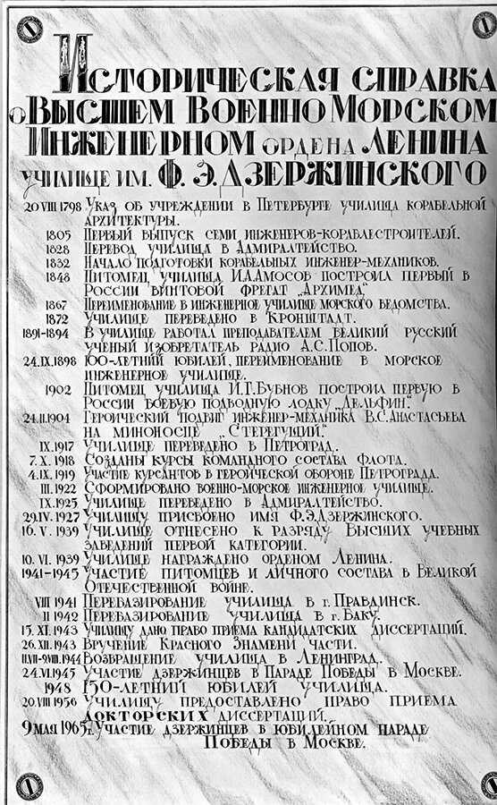
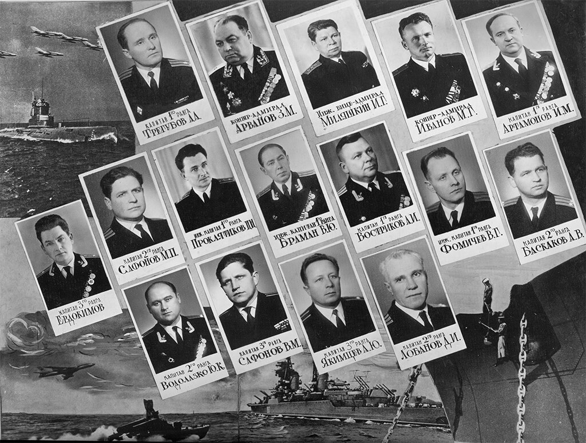
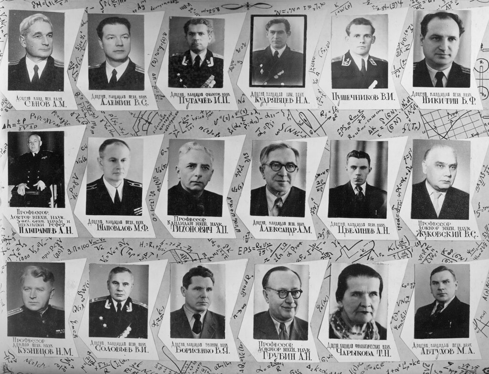
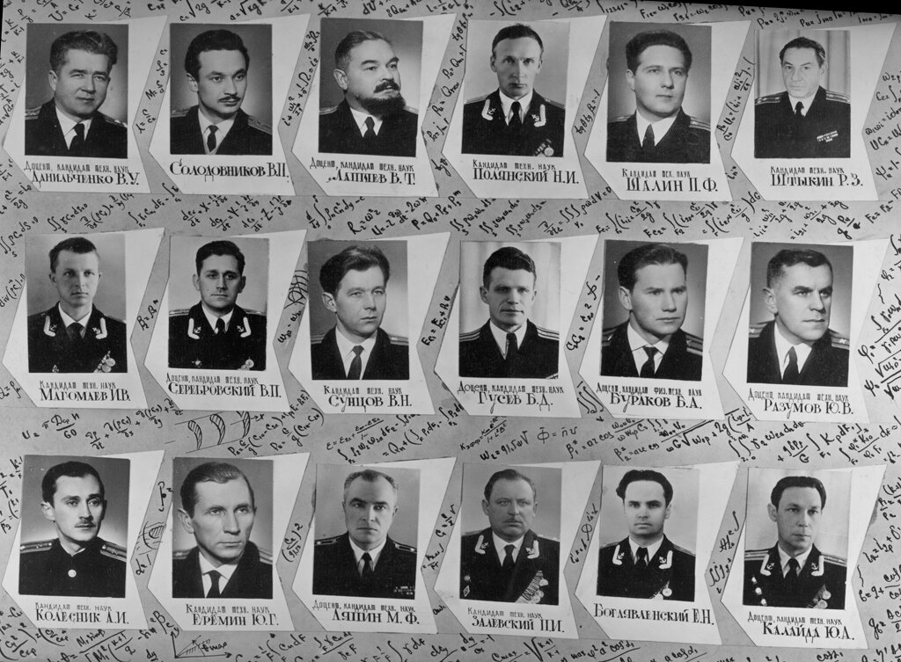
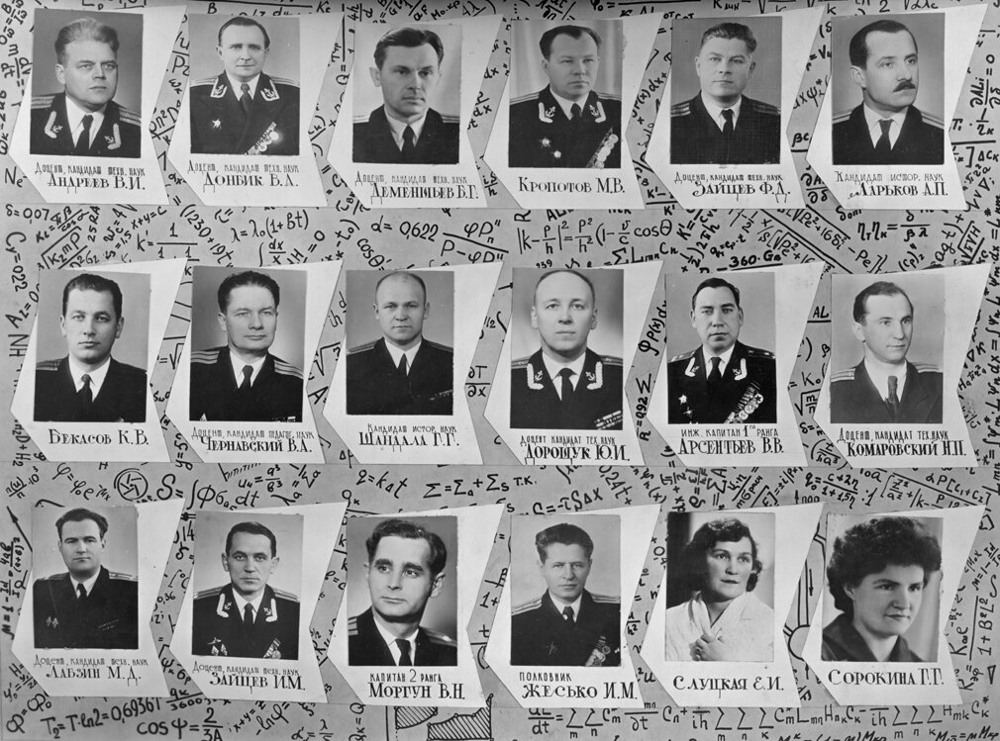
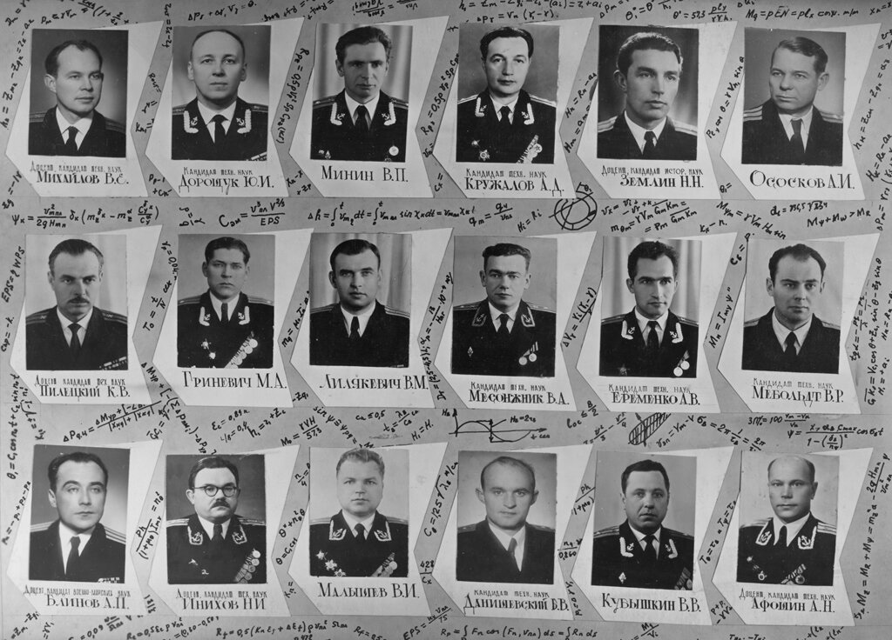
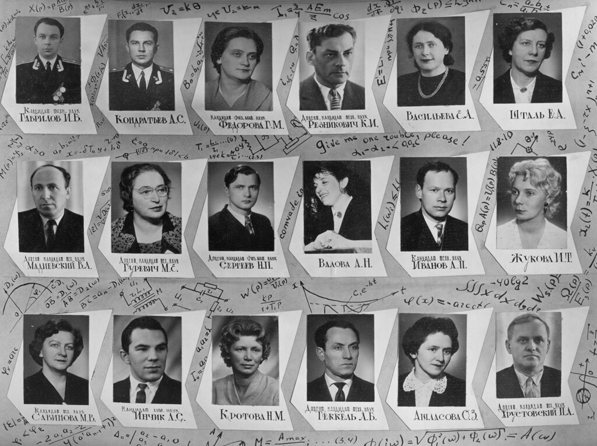
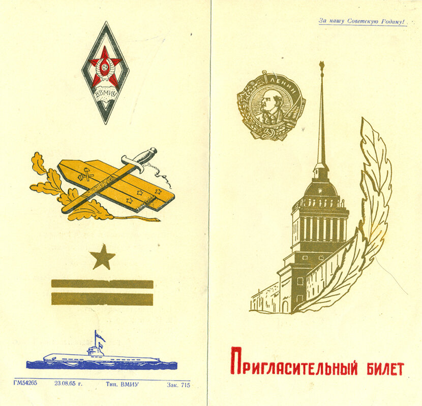

50 лет выпуска из "Училища корабельной архитектуры"
Без малого 50 лет назад состоялось производство в лейтенанты курсантов очередного выпуска Высшего Военно-морского инженерного училища им. Ф.Э.Дзержинского в Ленинграде. Сегодня, в канун 23 февраля, хочу вспомнить своих учителей, каждый из которых вложил часть своей души, свое умение и свои знания в воспитание и обучение моих друзей - офицеров-подводников.
Прежде - копия той мраморной доски, которая висела в нашем клубе в Адмиралтействе

А далее - фотографии наших учителей:






Здесь не все наши учителя. Не все фотографии удалось достать. Их больше. И все они навсегда останутся в нашей памяти.
А после производства был, как водится, выпускной бал. Вот такое приглашение получила на него моя жена:
